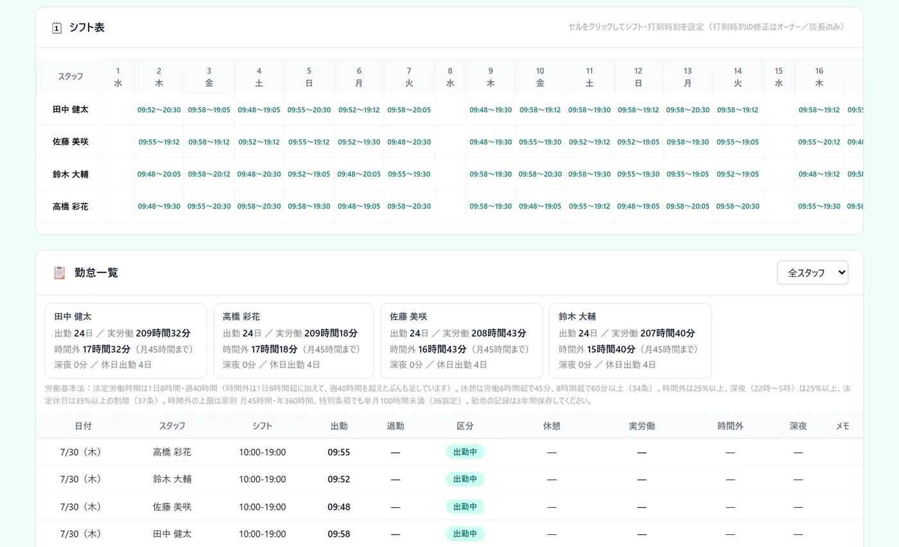
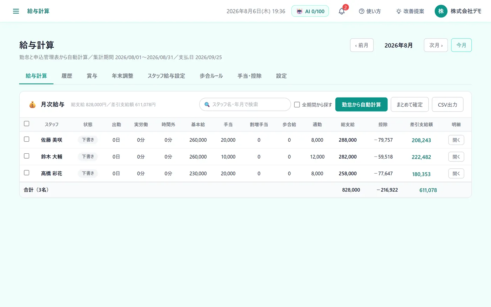
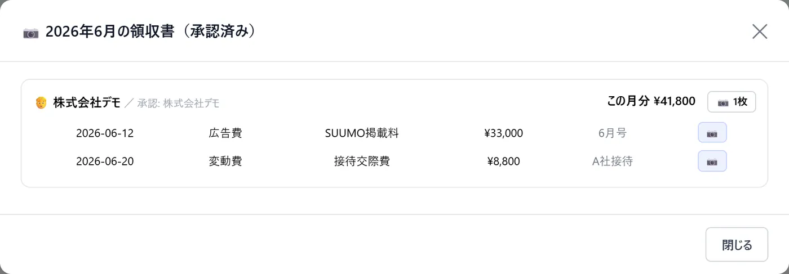

こんな困りごとに
- 勤怠・経費・給与を、別々のツールやExcelで管理している
- 歩合給の計算を、毎月手作業でしている
- 領収書を集めて入力するのに時間がかかる
この機能でできること
- スマホで出勤・退勤を打刻。実労働・時間外・深夜を自動で集計
- 勤怠と申込管理表の実績から給与を計算。歩合のルールは会社ごとに作れる
- 領収書はAIが日付・金額・取引先を読み取り、承認されると経理に自動で計上
メニューの場所左メニュー「バックオフィス › 勤怠／給与計算／領収書読取り／経理・PL」
!一部の機能はオプションです
領収書・請求書の読み取りはオプションです。
ご利用の条件は、お気軽にお問い合わせください。
使い方（3ステップ）
-
1
出勤・退勤を打刻する
左メニュー「バックオフィス › 勤怠」の「出勤」「退勤」ボタンで打刻します（スマホからもワンタップ）。退勤のときに休憩時間を入れると、実労働・時間外・深夜が1日ごとに計算され、打刻した時刻はシフト表にも反映されます。

-
2
給与を計算する
「給与計算」で、最初に締め日・支払日・手当や控除・歩合のルールと、スタッフごとの給与設定を登録します。毎月は、月を選んで「勤怠から自動計算」を押すと、勤怠の打刻と申込管理表の実績から給与が計算されます。

-
3
経費と損益を確かめる
「領収書読取り」で領収書を撮影して「AIで読み取る」を押すと、日付・金額・取引先・項目が入ります。店長に申請して承認されると経理に計上され、「経理・PL」で売上・粗利・営業利益・経費を月ごとに確認できます。

よくある質問
給与の画面は、誰でも見られますか？
見られません。給与額が見える画面なので、給与計算は最初は非表示になっています。使う人にだけ、ログイン管理から表示を許可します。
領収書の原本はどう残りますか？
承認済みの領収書は原本の画像つきで保存され、削除や改変ができません（電子帳簿保存法に配慮した保存）。